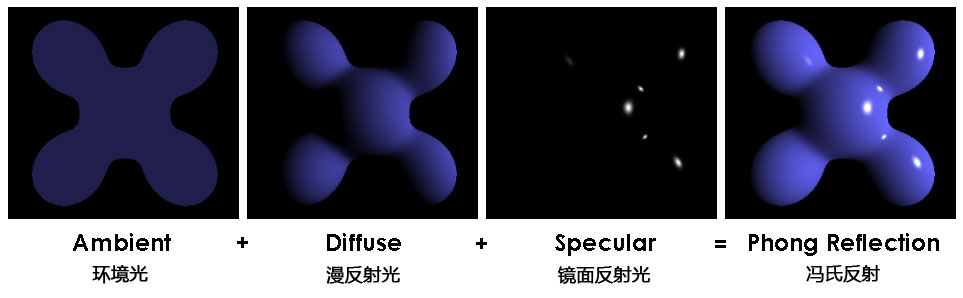
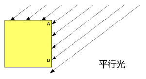
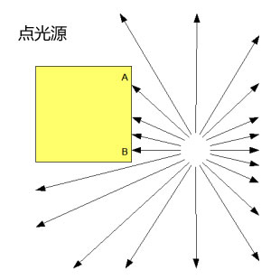

冯氏反射模型引申了这个四步走的光照系统，首先所有的光线都有以下两个属性：
其次所有材质都有以下四个属性
对于场景中的每一点，它的颜色都是由照射光的颜色、材质本身的颜色和光照效果混合起来的。所以，根据冯氏反射模型，为了解决场景中的光照，每条光线我们都需要知道两个属性，每个物体表面上的点都需要4个属性。环境光应当是自然的，而不是特定的光线，但我们依然需要找到一种方法来储存整个场景中的环境光；有时可以用最简单的方法，就是为每个光源设置一个环境等级，然后把它们都放到一个单一项中。
好了，我们有了以上的预备知识，我们就能计算出环境光、平行光和镜面反射光照在任何一个点上的颜色，然后再把它们组合到一起，就得到了最后的颜色值。下面这幅图清晰的解释了我们的工作原理。而我们所有的着色器需要做的就是分别计算出在环境光、漫反射光和镜面反射光下每个顶点的红、绿、蓝的颜色，然后组成RGB值，再组合到一起，最后输入结果。

最后，只考虑一种最简单的漫反射光，那就是平行光。下面我用图表来解释一下。
 从一个方向上来的光可以分为两种。一种是简单的平行光，来自于同一个方向的平行光束穿越整个场景。另一种是点光源，来源于场景内的一个点发出的光线，也就是说每个地方的光线角度都不一样。
对于简单的平行光来说，当光线打到物体表面的顶点上（图中的A点和B点），入射角永远都是相同的。想一下太阳光，光线都是平行的。
相反，对于点光源，A点和B点的入射角是不同的。A点差不多是45°，而B点则接近0°，也就是说B点的入射光线垂直于物体表面。
这也就意味着对于点光源，我们需要为每个顶点都计算出各自不同的光线入射角度；然而对于平行光，我们只需要使用一个固定的角度。这就使得点光源变得有一些复杂(to be continue ...)
这样我们就把问题精炼了。我们知道我们场景中的所有光线都会来自于一个固定的方向，而且这个方向对于每个顶点来说都是不会改变的。也就是说我们可以把它放到uniform变量中，然后提供给着色器来调用。我们同样知道每个顶点上的光照效果取决于光线的入射角度，所以我们需要找到一个可以代表物体表面朝向的东西。对于3D几何体，最好的办法就是指定顶点所在表面的法线向量，这个向量允许我们用3组数字表示出物体表面的朝向。（在二维世界中我们可以同样使用切线来达到这一目的，但是在三维世界中，切线的垂线是指向两个方向的，所以我们要用两个向量来表示它，而表示法线我们使用用一个向量就可以了。）
除了法线之外，在像着色器写入代码之前我们还需要最后一样东西。我们指定了顶点平面的法线向量，还有用来表示光照方向的向量，我们还需要计算出物体表面漫反射了多少光。这与这两个向量之间角度的余弦值成正比。当法线向量与光照方向向量的夹角是0度的时候（也就是说，光线完全照射到物体表面，光线方向90°垂直于物体表面），我们可以看做物体反射了所有的光；当夹角为90度的时候，没有任何光线被反射；当夹角处于0到90度之间时，应当符合余弦曲线。（如果当角度大于90度时，根据我们的理论会得出一个负值的反射光，这显然是很扯淡的）
计算这两个向量夹角的余弦值并不是什么复杂的计算，如果它们两者的长度都是1，那我们只要使用这两个向量的点积即可。点积运算是内置于着色器的，我们只要使用这个叫做dot的函数即可。